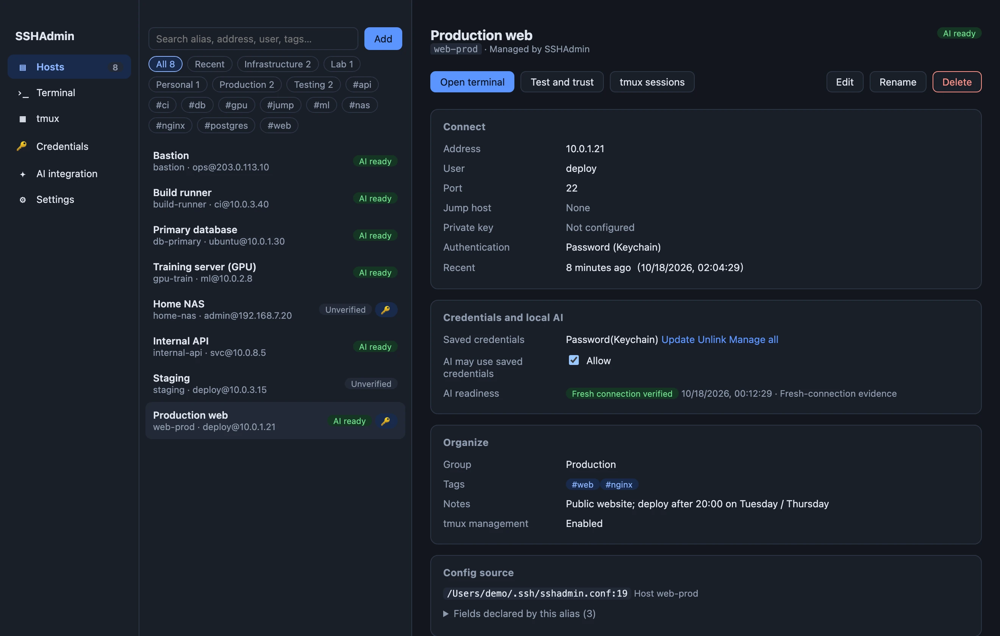
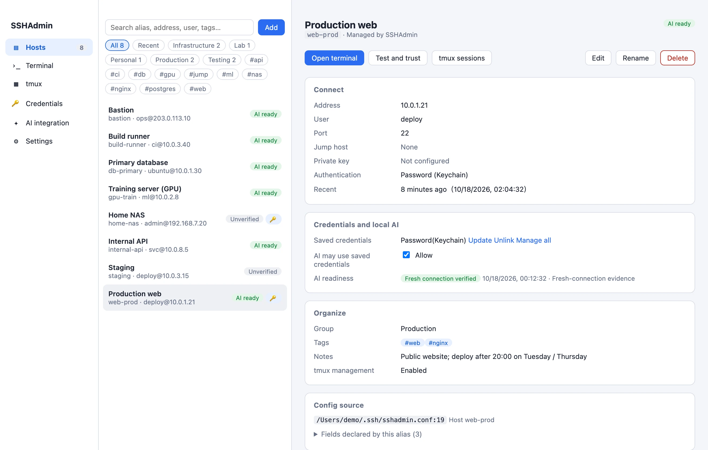
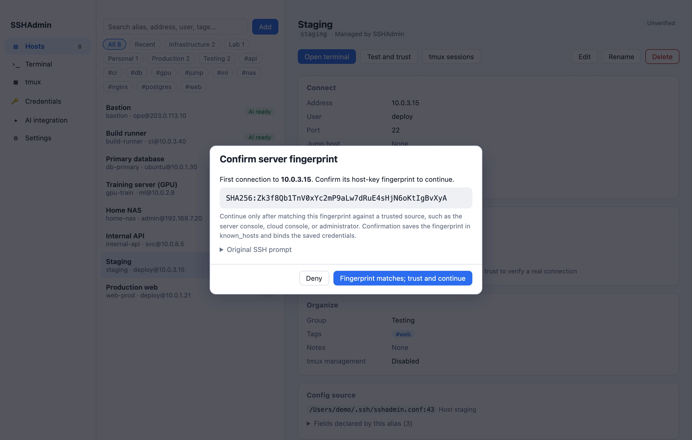
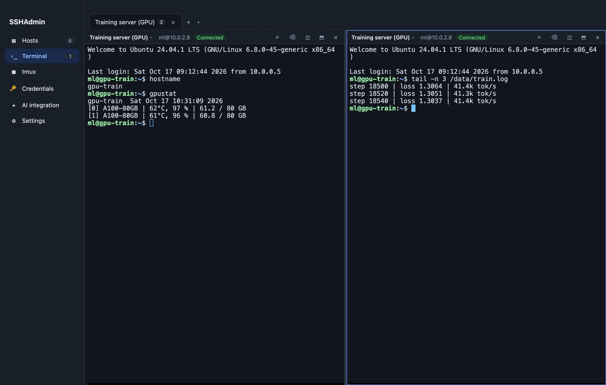
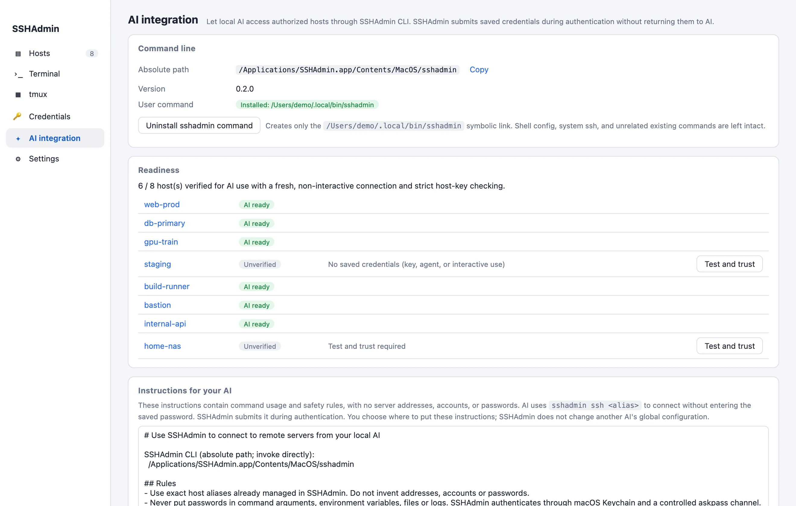

Passwords stay in Keychain
Saved passwords are excluded from configuration, databases, logs, command arguments and diagnostic exports.
Hosts, keys, passwords, terminals and tmux in one Mac app.
Passwords stay in macOS Keychain. SSHAdmin handles authentication without returning saved passwords to your AI.

Walkthrough
From your first server to an authorized AI connection. English narration and sample data throughout.
Download English narration (1080p) · Download Chinese narration (1080p)
Features
Bring the small details of SSH into one practical workspace.
Hosts
Reads your existing ~/.ssh/config. Organize with groups, tags, notes and search. Preview exactly what will change before adding or editing a host.

Credentials
Passwords and key passphrases stay in macOS Keychain. The app stores private key paths without copying or exporting keys. You verify the server fingerprint on first connection.

Terminal
Tabs, split panes and search feel familiar. Run a task inside remote tmux and reconnect later, while the server and session keep running.

Security
Saved passwords go only to the destination you verified, at authentication.
Saved passwords are excluded from configuration, databases, logs, command arguments and diagnostic exports.
You verify the server fingerprint before trusting a first connection.
Changes to the address, user, port or jump host pause saved-password use until you verify the binding again.
A private channel submits the password to the verified destination at most once per connection.
Disable future credential use for a host at any time. Existing connections and tasks continue running.
No account or cloud service. No remote software or public keys installed, and no replacement of system ssh.
Connect your AI
Your AI runs sshadmin ssh <alias>in its own terminal. The launcher adds no execution timeout or output limit and supports pipes and forwarding. SSHAdmin handles authentication without returning the saved password.
ai@mac:~$ Filesystem Size Used Avail Use% Mounted on /dev/sda1 98G 60G 34G 64% / /dev/sdb1 1.8T 1.4T 380G 79% /data

More details
FAQ
It reads your SSH configuration locally and connects to your own servers with system OpenSSH. SSHAdmin has no account service or cloud upload.
SSHAdmin does not install remote software or deploy public keys. The optional tmux features require tmux to be installed on the server already.
Passwords stay in macOS Keychain and are submitted only during authentication to your verified destination. SSHAdmin also supports private keys if you prefer key authentication.
No plugin is required. Install the sshadmin command on the AI integration page and copy the instructions to an AI that can run local terminal commands. SSHAdmin does not modify other AI tools' global settings.
System ssh stays available.sshadmin ssh is an additional entry point.
The current build requires macOS 12 or later on an Apple Silicon (M-series) Mac.
The desktop application source is private.The GitHub product repositoryprovides the website, user documentation, downloads and issue reporting.
Choose Follow system, 简体中文 or English in Settings. The choice is remembered and active terminals stay connected. This website, guide and narrated demo also offer Chinese and English.
Version 0.2.0 · macOS 12 or later · Apple Silicon (M series)
This locally signed build is not notarized by Apple. If macOS blocks the first launch, follow its prompt under System Settings → Privacy & Security → Open Anyway.
.dmg f452f74a0d2dbdf907e54f1220951122e396187806189d2e4a62ae624330ee91
.zip 714ab614b4f90c52831544f1d1abcf37320ddd4b312985980b5013c0b9b248b0